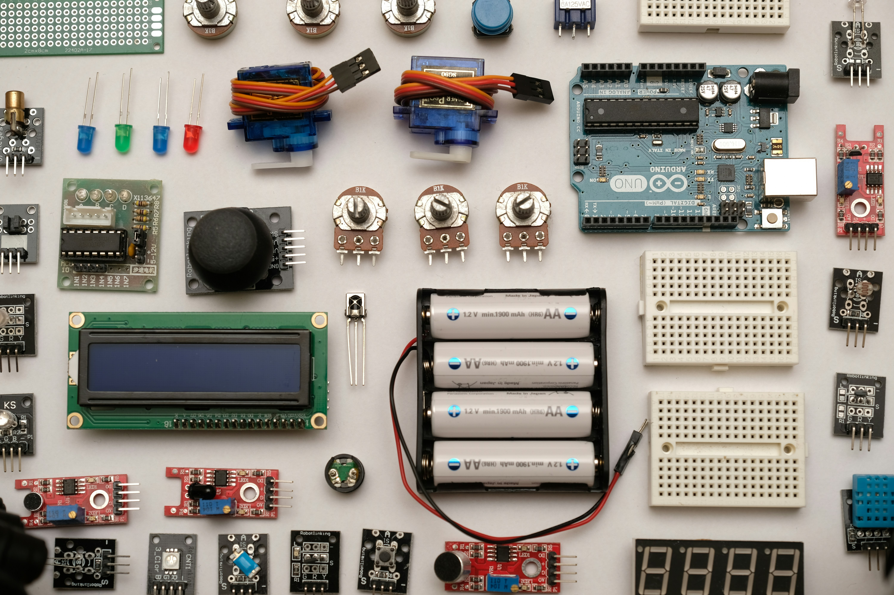

Programmation et Développement
- Langages de programmation : HTML, CSS et Python pour concevoir des Sites Web et des systèmes embarqués.
- Microcontrôleurs et systèmes embarqués : Programmation d'Arduino et de Raspberry Pi pour contrôler des capteurs et actionneurs.
- Conception d’interfaces : Création d'interfaces utilisateur pour la gestion d'objets connectés.

Électronique et Systèmes Connectés
- Électronique de base : Étude de composants comme résistances, diodes, et transistors.
- Capteurs et actionneurs : Intégration et utilisation de capteurs pour des systèmes interactifs.
- Traitement du signal : Acquisition et interprétation de signaux analogiques et numériques.
Réseaux et Communication
- Protocoles de communication : TCP/IP, Wi-Fi, Bluetooth pour la communication entre appareils.
- Objets connectés (IoT) : Développement de projets avec capteurs et modules de communication.
Conception de Systèmes Numériques
- Schémas électroniques et simulation : Utilisation de logiciels pour dessiner et simuler des circuits.
- Création de prototypes : Fabrication et assemblage de systèmes électroniques.
Gestion et Traitement des Données
- Acquisition de données : Collecte et stockage de données provenant de systèmes connectés.
- Visualisation des données : Présentation des informations sous forme de graphiques.
Sécurité des Systèmes d’Information
- Sécurisation des réseaux : Introduction à la cybersécurité avec Cisco NETACAD.
Projet Technologique
- Approche par projet : Analyse, conception, développement, et tests de solutions technologiques.
- Travail en équipe : Collaboration, partage des compétences, et gestion de projet en mode agile.
- Présentation et communication : Compétences pour rédiger des rapports et défendre des projets devant un jury.